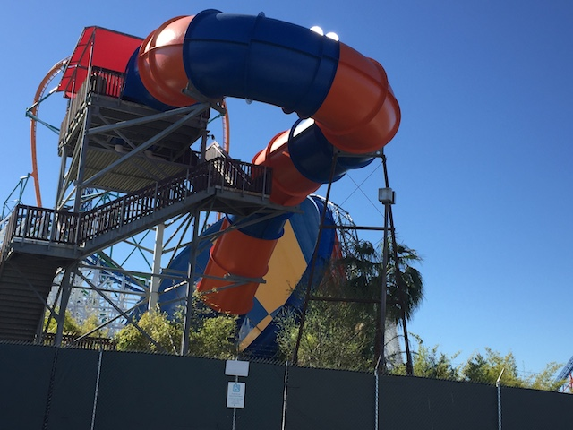
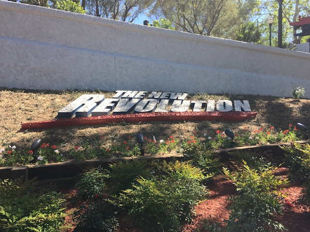
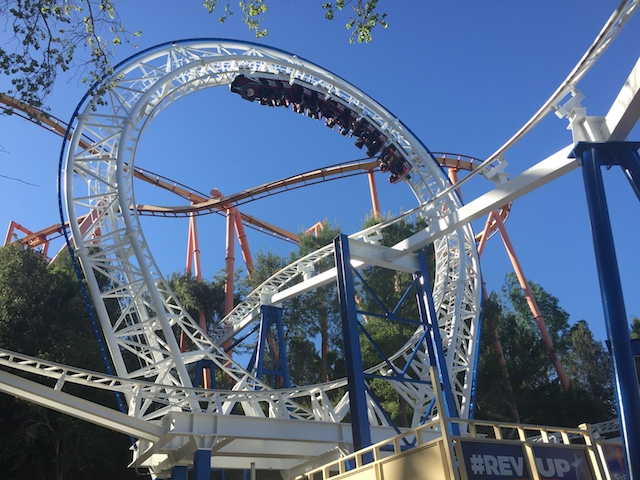
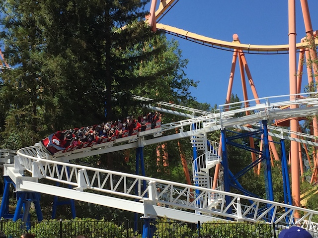
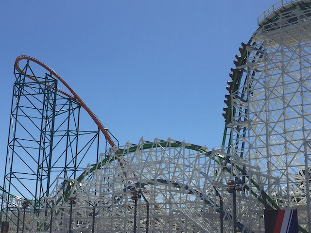
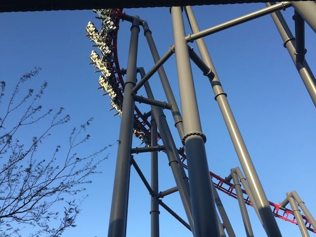
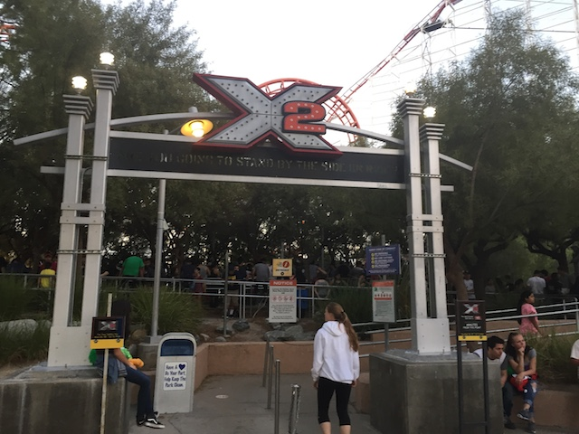

| |
New Revolution Preview
All right. Time for another update. We're here at Six Flags Magic Mountain for the New Revolution, which has opened up for Season Pass Preview holders. So yeah. This was something that I'm definetly looking foreward to riding this. Oh, and hey. You can see that they replaced the original Collosus on the entrance with Twisted Collosus. =)

Hey! You can see that they only painted the outside of Tornado.
I know it's been a longass time since I went to that Wendys right by Six Flags Magic Mountain after I stopped going thanks to not only their jacked up prices, but also discovering a bunch of local places in Valencia. They really stepped it up with a nice new interior and a Freestyle Coke Machine. Sweet!!! =)
OK. Getting off track. We're not here to discuss Fast Food. We're here to discuss the New Revolution.
Hey, I may be annoyed by all the advertising. But Peeps are freaking awesome.
Well I can clearly see that SFMM has completely given up on trying to be family friendly by showcasing Family Guy in the park (Man, I remember YEARS ago back when the show used to actually be good).
Crap! Looks like a lot of people decided to make the reservations for New Revolution. I was hoping it'd be like the Season Pass Preview for X or the Season Pass Preview for Batman Backwards (Both of which were empty. WRONG!!!).
Yep. You had to have made reservations if you wanted to ride New Revolution today.
 All right!! Time to ride!!
All right!! Time to ride!!

Ooh. Pretty garden work. =)
I personally disagree with that. But all in all, it's only 13. Not too big a deal, though I know I would've loved to use the VR technology back when I was a 9 year old coaster enthusiast.
Never thought I'd ever be this happy to wait in a line like this for Revolution.
 I've complained about the OTSRs for years. And after countless hours of joking about them and saying "What's your excuse?" after riding Montezooma's Revenge, Full Throttle, and Twisted Collosus, Six Flags took the hint, learned that they had none, and they removed the OTSRs. Really looking foreward to this.
I've complained about the OTSRs for years. And after countless hours of joking about them and saying "What's your excuse?" after riding Montezooma's Revenge, Full Throttle, and Twisted Collosus, Six Flags took the hint, learned that they had none, and they removed the OTSRs. Really looking foreward to this.
Oh yeah! Revolution is now a virtual reality coaster!! I was skeptical about the VR technology, but it's really cool on the ride. It's not perfect and I definetly won't want to use it all the time (I'm hoping to ride it without the VR on my next visit), but I was very impressed with it. The only downside with the VR is that it makes the operations HORRIBLE!!! The operators don't know how to get the VR on people's heads and it TREMENDOUSLY slows the whole process down. They really need to step that up for when it opens to the general public.
 New Revolution through the trees.
New Revolution through the trees.

But seriously. New Revolution is a HUGE improvement and the lap bars alone make the ride a MILLION times better. It's gone from a ride I wrote off and considered sh*t to a really good coaster at Six Flags Magic Mountain.

Definetly looking foreward to getting more rides on this later this year.
In other news, the Panda Express has officially been replaced by Chop Six (Nice name).
Now I'm a HUGE Panda Express fan. But I'm not sad to see it go for a couple reasons. #1. SFMM food prices are insane, so I don't eat there. #2. The Panda Express that was there was crap. They didn't even have Beijing Beef on their menu. Why would I eat at a Panda Express that doesn't even serve Beijing Beef!!? You should not be allowed to be called a Panda Express if you can't even serve Beijing Beef. Now there are those who are saying that this is great and that Six Flags finally put in an authentic Chinese resteraunt (Why is there a Chinese Resteraunt in a Mexico themed area? Oh, who cares. The theming is so poorly done that it doesn't even matter). HA! I don't believe for a second that this place is authentic Chinese Food. Now don't get me wrong. Panda Express isn't authentic AT ALL!!!! I may be a huge Panda Express fan, but to the fans trying to bullsh*t themselves into thinking it's authentic, Panda Express is to Chinese Food what Taco Bell is to Mexican Food. I may love it, but it's still Fast Food. Even if it's one of my favorite fast food chains, that doesn't change the fact that it's Fast Food. But I do not believe for a single second that Six Flags went to some authentic local Chinese Family, and brought back the recipies to America. ESPECIALLY after seeing that this place is at other Six Flags parks. This place is about as authentic as crappy mall Chinese Food. Even so, I don't care because let's be real. Panda Express is still in Valencia, and if I want it, I'll just eat there. And I can order Beijing Beef at the Valencia one. ;)
Oh, and did I mention that it was PACKED today?
In other news, Orient Express has been renamed to the "Helpful Honda Express". GOD DAMN IT!! STOP IT WITH THE ADVERTISEMENTS!! Hoping that this is just a temporary thing (I can't imagine this Honda Endorsement lasting forever). Though I have heard others say that they renamed Orient Express because that name isn't politically correct. Oh god!! Not this debate. I have a very complex and complicated opinion on the issue of political correctness that'd probably piss both people who strive for political correctness and those who HATE political correctness for being both too politicaly correct and not politically correct enough at the same time. The only thing I will say is that political correctness is not a black and white issue (No pun intended) and for everyone to PLEASE USE HUMAN JUDGEMENT!!! THAT'S ALL I F*CKING ASK!!! Oh, and if you're bitching about political correctness in the Drumpf way and using that as a code for having to hide racism, sexism, homophobia, etc. F*CK YOU!!! I'm not going to tolerate or even entertain the idea of debating you. You're wrong! Now go the f*ck away!! Go back in your little closets, hide your sick views in shame, and accept that you're rooting for a pathetic bankrupt loser as President (He'll lose the election and I'll drink your tears in celebration). But that'll never penetrate your brains cause let's be real. I'm just yelling at idiots who aren't going to change their minds. I'm just wasting my time. *groan*.
Thank god for the Single Riders line on Lex Luthor.
 Considering how crowded everything else in the park is, might as well wait the 45 minutes for Twisted Collosus since everything else has a wait of the same time.
Considering how crowded everything else in the park is, might as well wait the 45 minutes for Twisted Collosus since everything else has a wait of the same time.

I know I always rave about how good the RMCs are, but Twisted Collosus seemed extra good today, if such a thing is even possible. =)
HELL NO!!!
You people need to GO HOME!!!
ARE YOU F*CKING SERIOUS!!? ON A DAY LIKE TODAY!!? WHAT THE F*CK IS WRONG WITH YOU!!!?

*Sigh* Despite the operations being horrible, and the wait being WAY beyond my limit, I still waited for it for one simple reason. Killing Time. I figured I guess I'd rather stand in this 2 hour line than just wander around the park for 2 hours, because at least I'd get to ride X2 at the end (and I did at least get to listen to 2 podcasts in the line). Now normally, I'd just head home since that's normally my cue to leave. But I had plans for later that night, and I didn't want to head home in the opposite direction and then head back down to L.A immidietly afterwards. It's better to just kill some time at SFMM and perhaps ride a ride just for the sake of it. And X2 is a favorite of mine.

Waiting that line when it's only running one train? You guys must be f*cking insane. (Thank god my 2 hour wait wasn't to here. This has to be at least 3 hours).
Home
|